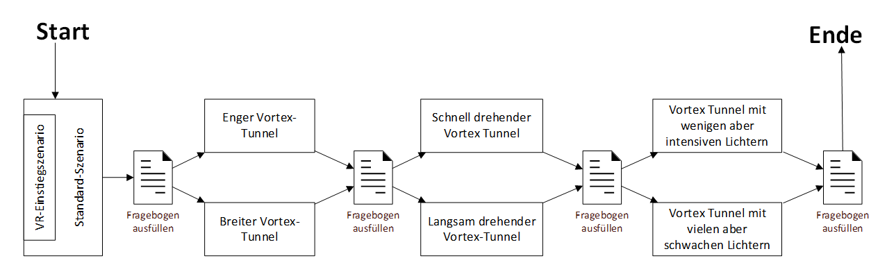
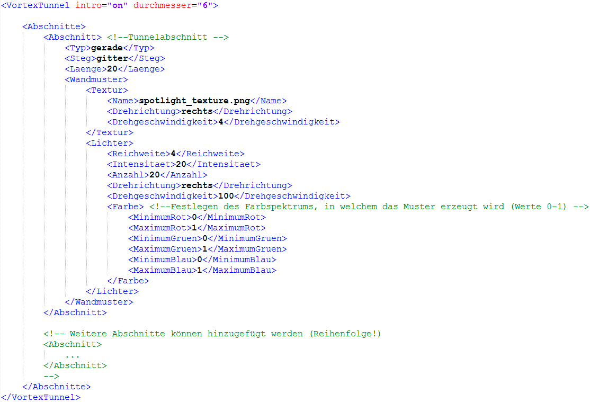

Versuchsaufbau
Notwendige Komponenten
- Raum mit mindestens 2 Meter mal 2 Meter freiem Platz
- 2 Teleskop-Ständer zur Befestigung der Sensoren
- 1 Geh-Hilfe zur Vermeidung von Unfällen
-
HTC Vive Set bestehend aus:
- 1 VR-Headset
- 2 Raumsensoren
- 2 Controller
- 1 Linkbox
- 1 VR-Headset
- Kopfhörer (optional)
-
VR-Computer mit folgenden Eigenschaften:
- nVidia GeForce 970+ / AMD Radeon RX 480 oder besser
- Intel Core i5 / AMD FX 8350 oder besser
- Steam-Account
- Vive-Account
- Stabile Internet-Verbindung
Probanden
Um den Versuch auszuführen sind mindestens 10 Personen notwendig, welche folgende Kriterien erfüllen sollen:
- Keine Epilepsie
- Kein Herzschrittmacher
Vortex Tunnel Testszenarien
Mit dem VR Vortex Tunnel Prototypen werden am 29-ten November 2017 zusammen mit freiwilligen Probanden Tests durchgeführt. Dabei soll untersucht werden, welche Tunnel-Einstellungen zum maximalen Effekt führen, bzw. wie die Probanden am stärksten aus dem Gleichgewicht gebracht werden können.
Testablauf mit jedem Probanden
Jeder Proband soll zu Beginn das Standardszenario des Vortex-Tunnels durchlaufen. Das Standardszenario beginnt in einer gewöhnlichen VR-Szenerie. Nachdem sich der Proband an VR gewöhnt hat, kann der Standard-Tunnel betreten werden.
Danach folgen drei weitere Szenarien, die den Probanden direkt in einen neu parametrisierten Vortex-Tunnel führen. Nach jedem Szenario soll die Testperson den entsprechenden Abschnitt auf dem Fragebogen ausfüllen. Zusätzlich notieren auch die Testleiter ihre Beobachtungen.
Es existieren sechs Testszenarien (exkl. Standardszenario). Jeder Teilnehmer wird nach dem Standardszenario durch drei der sechs Szenarien geführt. Die untenstehende Grafik erläutert den Ablauf genauer.

Testszenarien
Die nachfolgenden Abschnitte beschreiben jeweils ein Testszenario, welches so mit einem Probanden durchgeführt werden kann. Dazu muss vor dem Testen lediglich die Konfigurationsdatei „vortexparams.xml“ (Im Unterordner Assets des Projekts) entsprechend angepasst oder ausgetauscht werden.
Standardszenario
Mit dem Standardszenario soll in etwa ein „gewöhnlicher“ Vortex-Tunnel durchschritten werden. Als Referenz dient das folgende, in der Aufgabenstellung angegebene Youtube-Video:
https://www.youtube.com/watch?v=GJS-57LYdwE
Die Parameter, welche das Standardszenario beschreiben, sind unten ersichtlich:

Die Probanden sollen den Vortex Tunnel mehrmals durchschreiten, jeweils mit anderen Einstellungen. Zu diesem Zweck werden im Folgeabschnitt einige Testszenarien definiert. Um aussagekräftige Ergebnisse zu erhalten, sollen die Szenarien jeweils nicht zu stark vom Standardszenario abweichen. So kann die Wirkung einzelner Parameter besser nachvollzogen werden.
Szenario 1 – enger Tunnel
In diesem Szenario wird der Durchmesser des Tunnels im Vergleich zum Standardszenario verkleinert. Dabei soll herausgefunden werden, ob mit einem engeren Tunnel ein grösserer Effekt erreicht werden kann.
Dieses Szenario unterscheidet sich vom Standardszenario in folgenden Parametern:
- Intro: off (anstatt on)
- Durchmesser: 4.0 (anstatt 6.0)
Szenario 2 – breiter Tunnel
In diesem Szenario wird der Durchmesser des Tunnels im Vergleich zum Standardszenario vergrössert. Dabei soll herausgefunden werden, ob mit einem breiteren Tunnel ein grösserer Effekt erreicht werden kann.
Dieses Szenario unterscheidet sich vom Standardszenario in folgenden Parametern:
- Intro: off (anstatt on)
- Durchmesser: 8.0 (anstatt 6.0)
Szenario 2 – breiter Tunnel
In diesem Szenario wird der Durchmesser des Tunnels im Vergleich zum Standardszenario vergrössert. Dabei soll herausgefunden werden, ob mit einem breiteren Tunnel ein grösserer Effekt erreicht werden kann.
Dieses Szenario unterscheidet sich vom Standardszenario in folgenden Parametern:
- Intro: off (anstatt on)
- Durchmesser: 8.0 (anstatt 6.0)
Szenario 3 – schnell drehendes Muster
In diesem Szenario dreht sich das Wandmuster (sowohl Textur als auch Lichter) mit erhöhter Geschwindigkeit. Dabei soll sich zeigen, ob der Effekt des Gleichgewichtsverlusts noch verstärkt werden kann.
Dieses Szenario unterscheidet sich vom Standardszenario in folgenden Parametern:
- Intro: off (anstatt on)
- Textur -> Drehgeschwindigkeit: 6 (anstatt 4)
- Lichter -> Drehgeschwindigkeit 150 (anstatt 100)
Szenario 4 – langsam drehendes Muster
In diesem Szenario dreht sich das Wandmuster mit niedrigerer Geschwindigkeit. Dabei soll die Wirkung auf den Gleichgewichtsverlust ermittelt werden.
Dieses Szenario unterscheidet sich vom Standardszenario in folgenden Parametern:
- Intro: off (anstatt on)
- Textur -> Drehgeschwindigkeit: 2 (anstatt 4)
- Lichter -> Drehgeschwindigkeit 50 (anstatt 100)
Szenario 6 – mehr Lichter mit niedriger Intensität
In diesem Szenario wird die Anzahl Lichter im Vergleich zum Standardszenario reduziert, dafür wird deren Intensität erhöht. Dabei soll sich zeigen, ob der Effekt des Gleichgewichtsverlusts noch verstärkt werden kann.
Dieses Szenario unterscheidet sich vom Standardszenario in folgenden Parametern:
- Intro: off (anstatt on)
- Lichter -> Anzahl: 50 (anstatt 20)
- Lichter -> Intensität: 10 (anstatt 20)
- Lichter -> Reichweite: 2 (anstatt 4)
Versuchsresultate
Wähle eine beliebige Kombination aus Fragestellungen und den Datensätzen
Erkenntnisse Fragebogenauswertung
Effekt wird kleiner bei mehreren Durchläufen
Anhand der Mittelwerte der Bewertung «Mein Gleichgewichtssinn im Vortex Tunnel war beeinträchtigt» von einer Skala von 1 bis 10 sieht man, dass tendenziell der Effekt weniger stark in späteren Durchgängen wahrgenommen wurde. Einzig die Effektsteigerung in Szenario 2 war stark genug um diesen Effekt entgegen zu wirken.
Abbildung 1 Stärke des Gleichgewichtsverlustes anhand Mittelwerte
Enger Tunneldurchmesser ist effektsteigernd
Die Szenarien SZ1 und SZ2 beschäftigen sich mit der unterschiedlichen Effekt-Wahrnehmung bei der Vergrösserung (SZ1) bzw. der Verkleinerung (SZ2) des Tunneldurchmessers. Gemäss Testpersonen wurde in diesem Vergleich die grösste Effektsteigerung des ganzen Versuchsaufbaus festgestellt. So wird der kleinere Tunnel als massiv effektverstärkend gegenüber dem vergrösserten Tunnel wahrgenommen wie in der Tabelle unterhalb sichtbar ist:
Abbildung 2 Beeinflussung Gleichgewichtsverlust durch Tunneldurchmesser
Schneller Tunnel ist effektiver
Die Szenarien SZ3 und SZ4 beschäftigen sich mit der unterschiedlichen Effekt-Wahrnehmung bei der Beschleunigung (SZ3) bzw. der Verlangsamung (SZ4) der Drehgeschwindigkeit des Tunnels. Gemäss Testpersonen wurde der Effekt bei einem schnelleren Tunnel stärker wahrgenommen. Der Effekt war jedoch nicht stark genug um der Effektverkleinerung (siehe weiter oben) vollständig entgegen zu wirken. Somit orten wir den optimalen Wert für die Geschwindigkeit zwischen dem Standard-Szenario und dem Beschleunigungs-Szenario (SZ3).
Abbildung 3 Beeinflussung Gleichgewichtssinn durch Tunnelgeschwindigkeit
Viele Lichtquellen sind stärker als wenige starke Lichtquellen
Die Szenarien SZ5 und SZ6 beschäftigen sich mit der unterschiedlichen Effekt-Wahrnehmung bei wenigen starken Lichtquellen (SZ5) bzw. bei vielen schwachen Lichtquellen (SZ6) im Tunnel. Gemäss Testpersonen wurde der Effekt bei vielen schwachen Lichtern stärker wahrgenommen. Der Effekt war jedoch nicht stark genug um der Effektverkleinerung (siehe weiter oben) vollständig entgegen zu wirken. Somit orten wir den optimalen Wert für die Lichtquellen zwischen dem Standard-Szenario und dem Viele-Schwache-Lichter Szenario (SZ6).
Abbildung 3 Beeinflussung Gleichgewichtssinn durch Lichtquellen im Tunnel
Erkenntnisse Versuchsbeobachtung
Bei der Durchführung des Tests wurden nebst den Auswertungen der Fragebögen folgendes festgestellt:
- Je schneller die Testperson läuft desto geringer ist der Effekt
Die Geschwindigkeit der Testprobanden mit welcher der Tunnel durchschritten wurde beschleunigte sich mit jedem Tunnel-Szenario.
- Testpersonen tendieren darauf den «Steg» zu fokussieren in späteren Durchläufen
Im ersten Durchlauf war das Sichtfeld in die Ferne gerichtet um das «Begrenzungs-Netz» zu sehen. Bei weiteren Durchläufen wurde sich dann vermehrt auf den Steg fokussiert. Dies wurde durch Beobachtung des Blickfeldes in Unity festgestellt.
- Enthusiasmus der Testpersonen für VR verstärkt das Erlebnis
Probanden welche begeistert waren VR auszuprobieren haben den Effekt stärker wahrgenommen.
- Weitere bekannte Personen im Raum verfälschen das Resultat
Wir haben festgestellt, dass die geringe Wahrnehmung des Effektes von Testperson 7 sich auf Testperson 8 ausgewirkt hat. So änderte sich die Wahrnehmung von Testperson 8 drastisch nach einem kurzen Gespräch mit Testperson 7 in welchem der Effekt diskutiert wurde.
- Erklärung des Effektes des Vortex-Tunnels verstärkt diesen
Testprobanden welcher der Effekt genau erklärt wurde nahmen diesen verstärkt wahr. Dies sieht man sehr gut an Testpersonen 1 – 3, welchen das Ziel und der Effekt genau aufgezeigt wurde.
- Steam-Startraum wurde als angenehme Angewöhnung wahrgenommen
Wir haben zuerst eine Simulation eines Naturgebietes geladen jedoch wurde dies als etwas abrupt wahrgenommen. Die Testpersonen haben sich wesentlich besser Ladeschirm von Steam-VR zurechtgefunden.
- Genaue Fragen zu Gleichgewichtsverlust sind unklar
Häufig wurde nachgefragt, was genau mit einem Gleichgewichtsverlust in eine bestimmte Richtung gemeint ist. Eine genauere Erklärung des Fragebogens vor dem Versuch sensibilisiert die Personen, jedoch kommt es zur Effektverstärkung (siehe «Erklärung des Effektes des Vortex-Tunnels verstärkt diesen»)
- Versuchsprobanden geben am meisten Rückmeldungen zum Steg und nicht Tunnel
Bei Verbesserungsvorschlägen liegt der Fokus klar auf dem Laufsteg und weniger auf dem Tunnel selbst. Dies deckt sich mit der Erkenntnis, dass Testprobanen sich stärker auf den Steg in späteren Szenarien fokussieren (siehe «Testpersonen tendieren darauf den «Steg» zu fokussieren in späteren Durchläufen»)